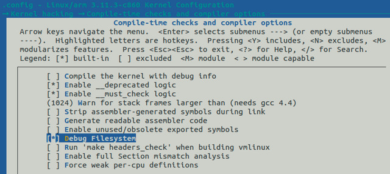
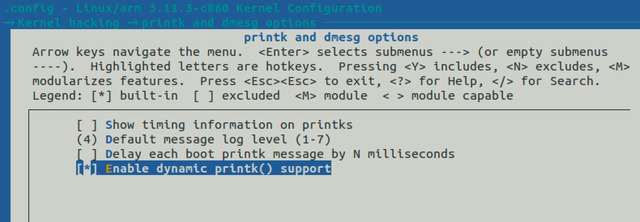

參考資訊：
https://www.kernel.org/doc/html/v4.19/admin-guide/dynamic-debug-howto.html
CONFIG_DEBUG_FS


# mount -t debugfs none /mnt # echo "file sharpsl_pm.c +p" > /mnt/dynamic_debug/control # echo 8 > /proc/sys/kernel/printk # echo "file sharpsl_pm.c -p" > /mnt/dynamic_debug/control # echo 4 > /proc/sys/kernel/printk